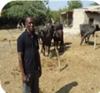
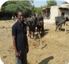

The impact of COVID-19 has clearly shown the systemic nature on the risk caused by as biological hazard,
that is, a public health disaster which quickly turned into a socio-economic disaster. In
addition, it is unfolding on top of various other shocks such as desert locust, fall armyworm
(FAW), droughts, floods, storms and conflicts, that severely affect agricultural livelihoods
and food systems.
Together these disasters, some linked to or exacerbated by the impacts
of climate change, will further worsen the exposure and vulnerabilities of people, systems
and economies.
Building assets and diversifying income is a fundamental step in helping poor households and
communities move out of poverty and build financial resilience, especially in agricultural
communities where crops are prone to weather and pest-related failure. FOAD livelihood
support programs continue to have a stronger focus on women's economic empowerment and
gender equality.
Women's economic empowerment is essential to reduce poverty and also an important
precondition for sustainable development for pro-poor growth.
Through the Agroecological project: Focus on Africa Development Inc. supported farmers in
Kirinyaga County to improve their livelihoods by increasing their yields in both quantity and
quality. And at the same time improving their resilience, Through the introduction and promotion of
organic farming and Agroecological practices.
Agroecological farming reduces the environmental impacts of agriculture while meeting
the growing demand for food, contributing to landscape quality and biodiversity, and
enhancing resilience
This three-year project (2014-2016) in Kenya achieved the following:
In our current operational strategy, We intend to replicate the project in the countries of Kilifi and kwale under the Swahili coast Agroecological Project

 

Providing access to safe water and adequate sanitation .
sensitization of Community Groups on clean Environment
Our guiding is The World Health Organization's definition of health

Focus on Africa Development Inc. (FOAD) is a regional non-governmental organization that was established in 2006 by a Somali Physician and Public Health Expert Dr. Said Aden and later registered in Somalia, Rwanda and South Sudan and has affiliate office in Australia.